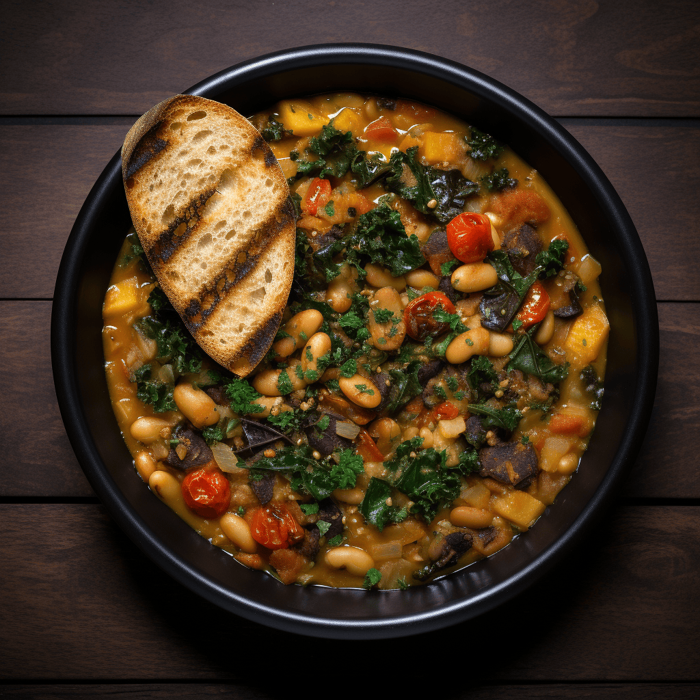
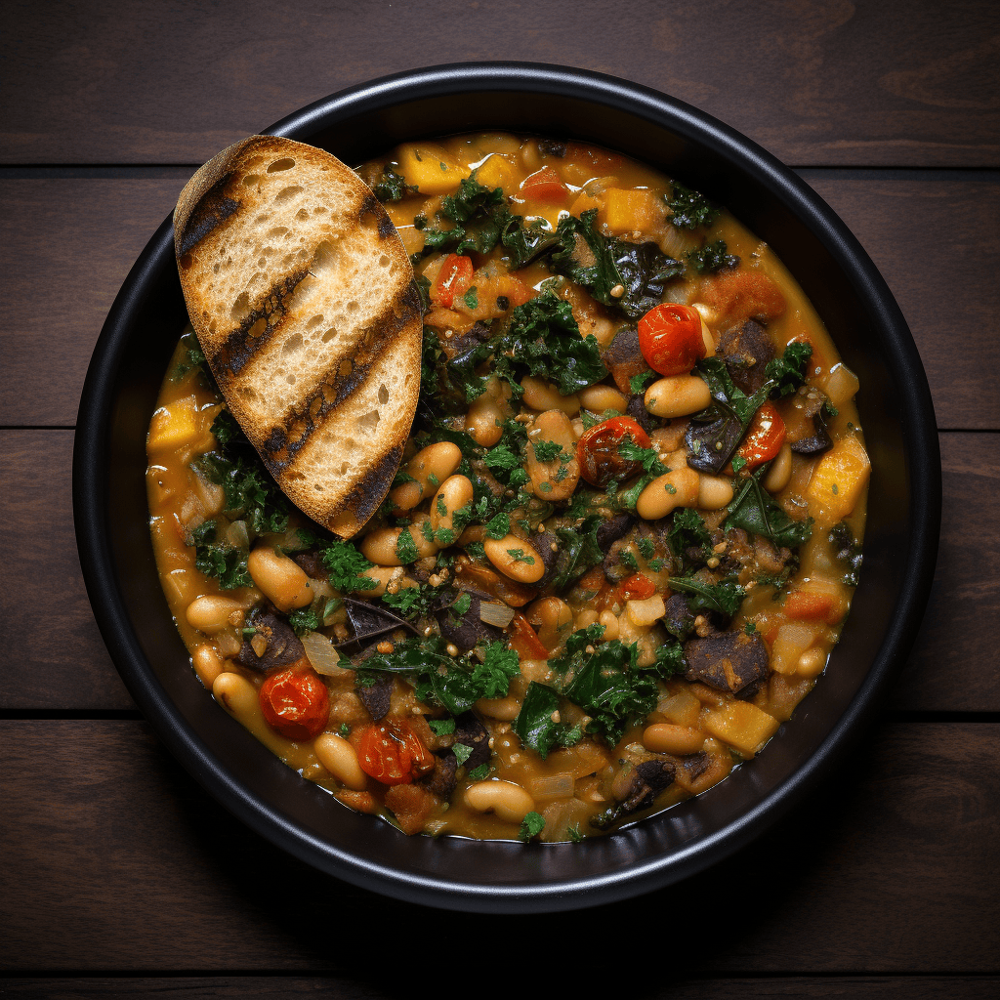

Gastronomia Italiana
Norte de Italia
El norte de Italia es conocido por su comida robusta y lujosa, influenciada por la cercanía con Francia y Suiza. Aquí, las preparaciones tienden a ser más ricas y cremosas, a menudo con salsas a base de mantequilla, crema y quesos curados. Los productos más utilizados son la carne de res, cerdo, y aves, además de arroz y pasta fresca. Uno de los platos más icónicos es el risotto, especialmente el risotto alla milanese, que lleva azafrán y es un acompañamiento frecuente de carnes o mariscos. Otra especialidad del norte es la fondue en áreas montañosas como el Valle de Aosta que toma prestado de las tradiciones suizas, utilizando quesos locales como el fontina.
Centro de Italia
Uno de los platos más famosos de esta zona es la bistecca alla fiorentina, un gran corte de carne de res servido al punto deseado, que es un orgullo de la Toscana. También destacan platos como la ribollita, una sopa de verduras y pan o la pasta alla carbonara, un plato esencial que, aunque conocido en todo el mundo, tiene su origen en Lacio, donde se prepara con guanciale, huevos, queso Pecorino Romano y pimienta negra.
 

Sur de Italia
Un plato emblemático del sur es la parmigiana di melanzane, una lasaña de berenjenas con salsa de tomate, queso mozzarella y albahaca. La pizza, originaria de Nápoles, es otro imprescindible. En Sicilia, no te puedes perder el caponata, una ensalada templada de berenjenas, pimientos, cebollas y tomate, con un toque de vinagre y azúcar.